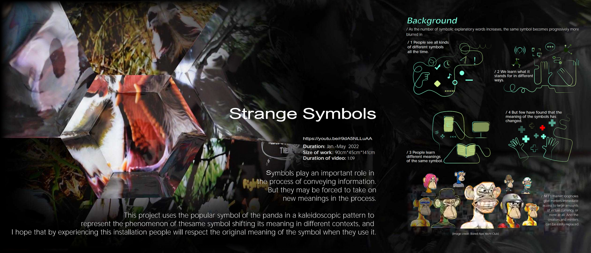
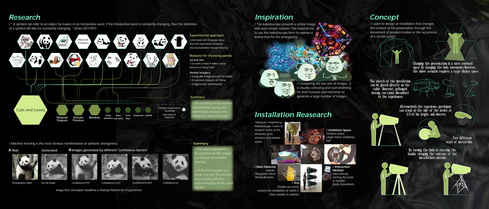
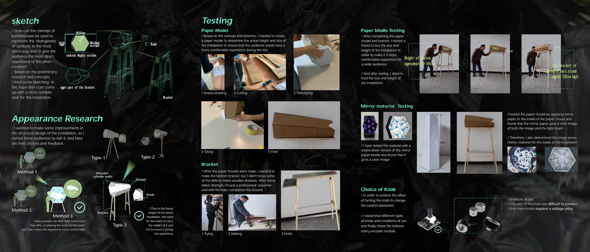
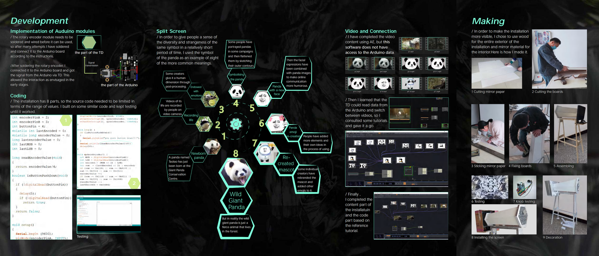
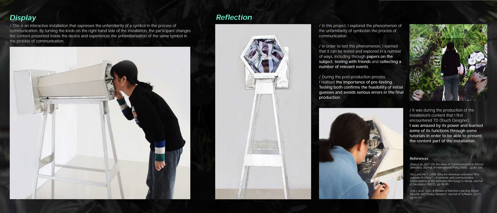

Interactive Installation · Physical Computing · 2022
Strange Symbols
Strange Symbols is an interactive installation exploring how a familiar cultural symbol can acquire unfamiliar meanings as it moves across different contexts. Using the panda as a case study, participants rotate a physical knob to navigate eight visual interpretations presented through a kaleidoscopic display.
Watch Project Video



